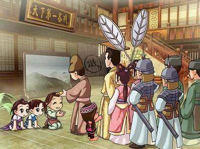

《仙剑客栈》是一款由大宇资讯旗下的北京软星开发的经营模拟游戏，于2001年8月31日上市，制作人为王世颖，前软星科技（北京、上海）企划指导、主企划。本作借用了《仙剑奇侠传》中的人物、地名、背景等，综合经营模拟、角色扮演、恋爱养成等多方面要素，玩家将扮演李逍遥，和赵灵儿、林月如、阿奴一起管理客栈。游戏中不但要负责接待好客人、收银、跑堂等工作，更需要收集食物素材、提高厨艺、安排好客人之间的次序，解决客人之间的矛盾、赶跑踢馆的人员、赶走苍蝇等工作。玩家要尽量让所有顾客都满意而归，努力提升客栈等级。
一片月光能谱写多少个浪漫？ 一把宝剑能诉说多少个梦想？ 一间客栈能演绎多少个传奇？月光与宝剑的客栈，浪漫和梦想的传奇。
李逍遥在少年时期就曾经和三个红颜知己在同一屋檐下了！咦？仙剑哪来这么一段故事？耶～各位客官别急！且听小的一一道来……话说～李逍遥十五岁那年某日，李大娘突然有事远行，将客栈交给逍遥代管，后来因缘际会，赵灵儿、林月如、阿奴三人相继出现，成为客栈的一份子。四人在一年的时间里共同经营客栈，同游同乐，生活中撒满欢笑的点点滴滴，客栈日渐兴隆、爱意渐渐滋长……时空倒错的十字路口，你来选定方向。真的有那么轻松快乐的完美结局吗？是真？是幻？全看玩家您会经营出怎样的结局……
http://www.gamersky.com/Soft/200902/18408.shtml
http://baike.baidu.com/view/358391.htm#3